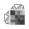
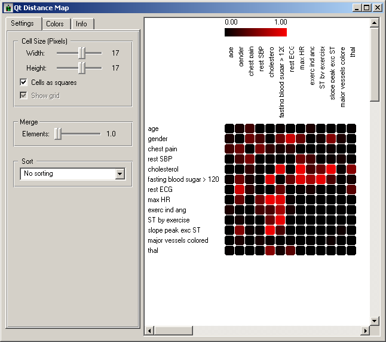
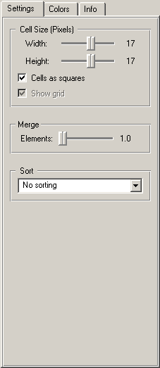
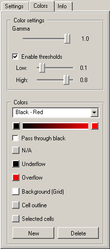
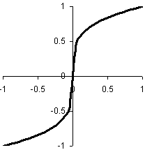
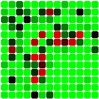
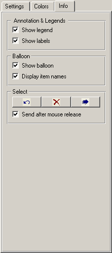
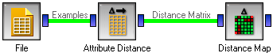

This is documentation for Orange 2.7. For the latest documentation, see Orange 3.
Distance Map¶
Visualizes distances between items
Signals¶
- Inputs:
- Distance Matrix (SymMatrix)
A distance matrix
- Outputs:
- Examples (ExampleTable)
Examples corresponding to selected elements of the matrix
- Attribute List (orange.VarList)
Attributes corresponding to selected elements of the matrix
Description¶
Distance Map is a visualization of distances between objects. The visualization is rather simple: it is the same as is we printed out a table of numbers, except that the numbers are replaced by spots colored by colors from the specified palette.
The distances are most often distances between examples (for instance from Example Distance or attributes (for instance from Attribute Distance. The widget does not require that (another option can be loading the distances from a file using Distance File, although when one of these is the case, the user can select a region of the map and the widget will output the corresponding examples or attributes through the appropriate signal.
The snapshot shows distances between attributes in the heart disease data, using the preset Black - Red palette, where smaller numbers are represented with black and larger with red. The matrix is symmetric and the diagonal is black - no attribute is different from itself. The former (symmetricity) is always assumed, while the diagonal may also be non-zero.
The widget’s settings are divided into three tabs. The first one defines the size and order of cells. Width and Height in the Cell Size box set the size of the cells. The cells can be restricted to squares (Cells as squares) and drawn with or without gridlines in between (Show grid). When cells are too small (8 pixels or less), the grid disappears in any case.
Merge merges multiple cells into a single cell, which can be useful when the matrix is too large. For this option to yield meaningful results, items need to be sorted so similar items are merged. The widget has three options; it can leave the items as they are (No sorting) it can put similar items together (Adjacent distance) or randomly shuffle the items (Random order). Of these, adjacent distance is unfortunately not implemented yet.
The second tab defines the colors that represent the numeric values. Gamma defines how numbers are mapped onto the palette colors. When set to 1 (default), the mapping is linear. When it decreases, the numeric values at the lower end get similar colors, the curve get steeper in the middle, and higher values are again represented with colors which are more similar than if gamma was higher. The graph below shows the mapping function at gamma=0.25.
Setting gamma is useful when the distribution of distances has long tails which are not very interested. The widget also offers controls for cutting of the outliers. Normally, the color palette is used to visualize the entire range of distances appearing in the matrix. This can be changed be checking Enable thresholds and setting the low and high threshold. Distances outside this interval are then shown using special colors, so the color spectrum can be used for visualizing the interesting part of the distribution.
The widget supports different color schemes. The built-in schemes are named Blue - Yellow, Black - Red and Green - Black - Red. The schema is defined, first, by the two colors representing the lowest and highest distances. The two colors are set by clicking the rectangles to the left and right of the color strip below the schema name. The transition can go either from one color to another (in the RGB space) or Pass through black, that is, from one color to black and then to another. Colors can also be set for undefined values (N/A), values below and above the low and high thresholds (Underflow and Overflow), the background (Background), the outline of the cell under the mouse cursor (Cell outline) and the marker around the selected region (Selected cells).
User can modify the existing schemata and also create new, customized schemata (New). The built-in schemata are shown below.
 The last tab defines the shown information and controls selection of cells. Show legend determines whether the widget shows the colored strip at the top which shows the mapping of numbers into colors. Show labels shows and hides the item names (e.g. age, gender etc) besides the map. Labels can only be shown it they exist; they do when the data represents distances between attributes or when the data is loaded from a labeled distance file.
If Show balloon is checked, a ballon appears when the mouse is hovering over a cell, which shows the numerical distances and, if Display item names is checked, also the names of the corresponding items.
The user can select a region in the map by the usual click-and-drag with the mouse. When a part of the map is selected, the widget output all items corresponding to the selected cells. The three buttons in the Select can undo the last selection, remove all selections and send the selected data. If Send after mouse release is checked, the data is set automatically, without needing to press the button above.
Examples¶
The above snapshots were obtained by the following schema:
The file widget loads the iris data set; we then compute the attribute distances and visualize them.